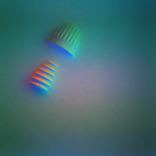
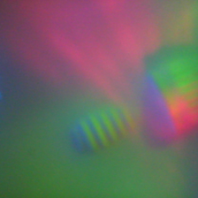
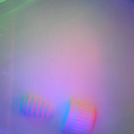
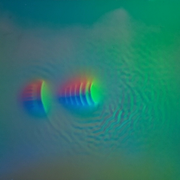
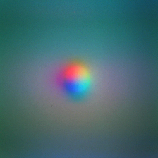
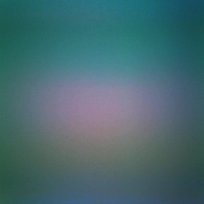
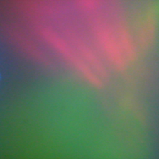
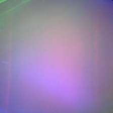
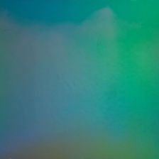
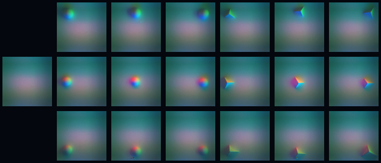

An interactive simulation
Same touch,
any sensor.
Press an object into four optical tactile sensors, or one you make up, and watch one model read them all.
Built on SITR · Gupta, Mo, Jin, Yuan · ICLR 2025
An independent demonstration. Not made by SITR’s authors.
And one sensor of our own: MoiréSkin.
The problem
One press, one picture.
Another sensor, another picture.
Real sensors do the same.
- Simulated sensor
- —
Each fitted sensor is simulated on its real background picture · SITR dataset

Real · Mini

Real · DIGIT

Real · Hex

Real · Wedge
One real screw on each of the four real sensors · images: SITR dataset
How a sensor paints a touch
The gel takes the shape.
Each slope catches a different light.
The camera sees slope as colour.
Press deeper. Slide it.
A soft gel under a thin reflective membrane. Whatever is pressed in leaves a dent.
Height drawn × 2.
Membranethin, reflective
Gelsoft, clear
Lightslow, around the gel

Real · ball on a Mini
Image: SITR dataset
- Press depth
- —
Every sensor paints differently
Higher lights paint a flatter picture.
Another gel, softer edges.
A wider view shrinks the touch.
- Simulated · lights’ angle
- —
- Simulated · gel’s skirt
- —
- Simulated · width in view
- —

Mini

DIGIT

Hex

Wedge
Real · four sensors, nothing pressed · images: SITR dataset
Telling the model which sensor
A ball pressed at nine places.
Then the corner of a cube.
The ball’s shape is known. Each picture shows how this sensor paints known slopes, there.
18
calibration images
4 mm ball · cube corner
3 × 3 grid each (SITR)

Real · a GelSight Mini’s set
Images: SITR dataset
The model
One model reads them all.
Out comes the shape.
Swap the sensor. The shape stays.
SITR: a transformer that takes the picture and the calibration set together.
trained on simulated sensors only · 100 sensor configurations (SITR paper)
SITR gives a map of slopes. This page scales it and adds it up into a shape.
—
Simulated picture, real model. Heights drawn × 2.
Our own sensor
Ours sees through its skin.
SITR cannot read it.
Its own model reads it.
More air wraps the membrane closer.
MoiréSkin: no side lights, no gel. A press shifts two line gratings, and the camera sees the lines move.
SITR reads shading, and here there is none. Given MoiréSkin’s own eighteen presses, its answer holds almost none of the shape.
made for sensors that shade · it has never seen one like this
The same press, read by the model made for this one sensor.
trained on presses from this same simulation · on nothing real
Air holds the membrane. More air wraps it further round the object, and the model reads more of the shape.
the simulation’s pressures · not the real sensor’s
—
Simulated picture, real model. Shapes: the framed 12 mm, heights × 2.
Simulated picture. Shapes: the framed 12 mm, heights × 2.
Try it
—
Simulated picture · real model · heights × 2
What is real, what is simulated.
- RealThe model: SITR’s released weights
- FittedFour sensors: to real calibration images
- SimulatedEvery press, in your browser
- Our ownMoiréSkin and its model: simulation only
Gupta, Mo, Jin, Yuan · Sensor-Invariant Tactile Representation · ICLR 2025 · arXiv 2502.19638
Model, real pictures and calibration protocol: the SITR release. This page is an independent demonstration and was not made by SITR’s authors.